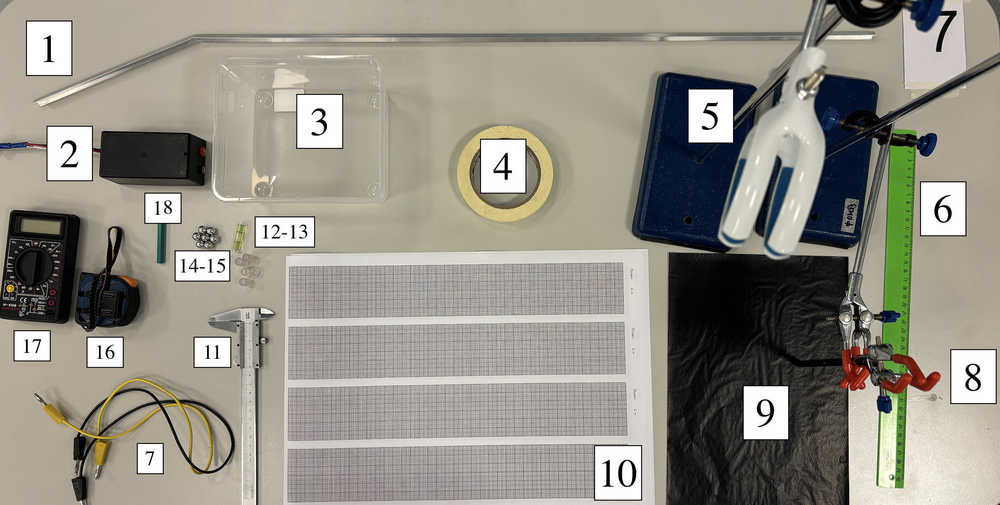
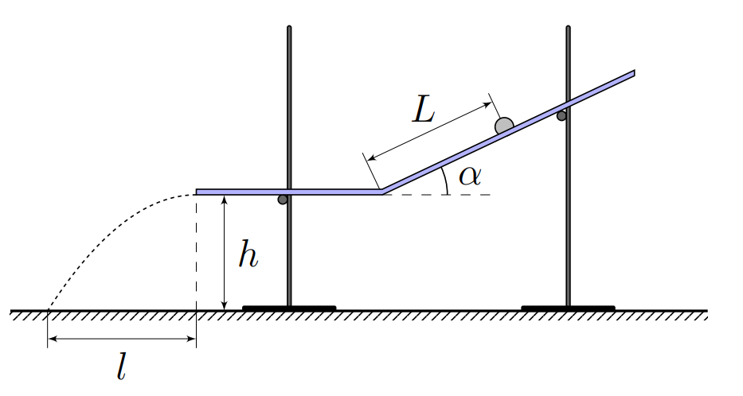
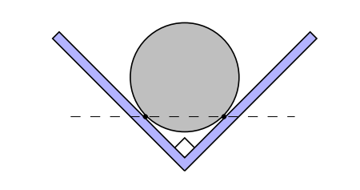
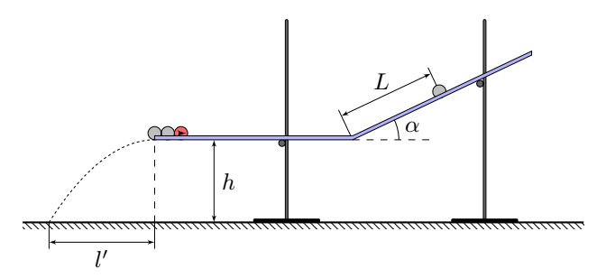
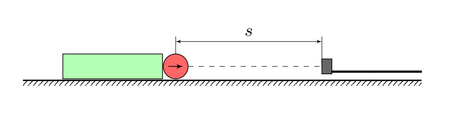
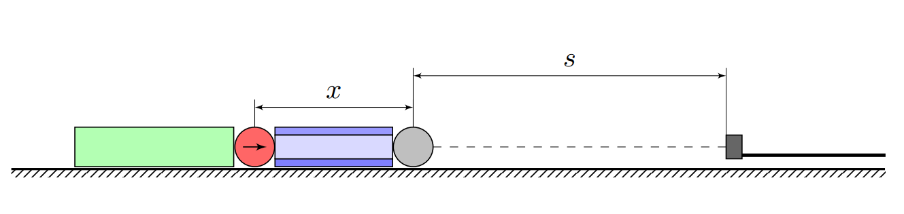
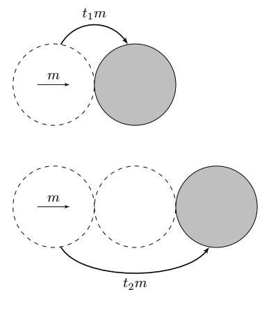
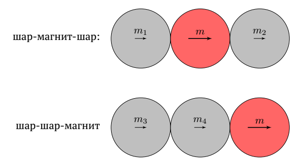
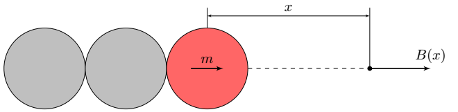
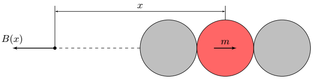

X25 (2025) — English translation
A Gauss gun is a device that allows you to convert electromagnetic energy into the kinetic energy of a ferromagnetic projectile. In practice, this mechanism has a low efficiency (1%), so it has no application in science and technology, but is widely used as a visual demonstration of the properties of ferromagnets, due to the simplicity and safety of installation. In this problem we will consider the simplest type of Gauss gun - the interaction of a chain consisting of a permanent magnet ($\rm NdFeB$) and steel balls with a steel ball flying at it. The configuration of the magnetic field before the collision is different from that after the collision, so part of the difference in magnetic energy is converted into the kinetic energy of the ball ejected after the interaction. Thus, the outgoing ball has a much higher speed than the incoming one.

Equipment: Aluminum gutter. Hall sensor (sensitivity $\frac{\mathrm{d}U}{\mathrm{d}B}=31.25~В/Тл$) with attachment. Plastic container for catching balls. Masking tape. Tripod with coupling and foot – 2 pcs. Ruler Banana-banana wire – 2 pcs. Additional foot to support the corner. A sheet of carbon paper. Sheet of A3 graph paper for measurements – 3 pcs. Calipers. 5 rubber tubes of different lengths. Cylindrical level. Ball magnet, diameter $ 10~ мм$. Steel ball caliber $10~ мм$, weight $M=4.17~г$ – 5 pcs. Roulette. Multimeter Pencil section. In this problem, the steel balls can be considered homogeneous, $\mu_{ст} \gg1$. Assume that the magnetization of a ball magnet is constant over time and is also independent of the external magnetic field. Attention! This problem does not require error estimation. Attention! Parts C and D are practically independent of the other parts.
In this problem, the steel balls can be considered homogeneous, $\mu_{ст} \gg1$. Assume that the magnetization of a ball magnet is constant over time and is also independent of the external magnetic field.
Attention! This problem does not require error estimation.
Attention! Parts C and D are practically independent of the other parts.
Marking ANY kind of mark on an aluminum gutter will result in a penalty point. Losing ANY equipment other than balls or a magnet will result in a penalty point.
Intentionally changing the angle of an aluminum gutter will disqualify you.
This part of the problem examines the rolling of a steel ball along an aluminum channel. Assemble the installation as shown in the figure below. Set the height of the horizontal section $h$ approximately at the level $24~ см.$

When a ball falls on the matte part of a sheet of copy paper, it leaves a clear dotted mark, so you can determine where the ball fell.
We will assume that when the ball passes through the corner of the groove, part $\gamma<1$ of its kinetic energy is lost.

Let's move on directly to studying the mechanism of the Gauss gun. To do this, install a magnet and two steel balls attached to it from behind on a horizontal section of the gutter (see figure). Note. Do not place the gun near the tripod leg as its influence may skew your results. Place the gun at the very edge of the gutter.
Note. Do not place the gun near the tripod leg as its influence may skew your results. Place the gun at the very edge of the gutter.

All measurements $l$ must be taken using ball drop marks on A3 sheets.
Next, we will study the influence of the initial velocity on the addition to the kinetic energy $E_{кин}$ of the translational motion of the “projectile” after interaction with the gun. Since there is an unambiguous connection between $E_{кин}$ and $l$, in what follows we will describe any energies in terms of the quantities $l$ and $l'$.
The Gauss gun works due to the difference between the magnetic energy of the initial and final states. Let us denote by $W_1$ the work done by the magnetic field of the gun on the ball that flies at it ($W_1>0$), by $W_2$ the work done by the magnetic field of the gun on the ball that flies away from it as a result of the “shot” ($W_2 < 0$). In this case, due to the impact, part of the energy is dissipated. This fact can be taken into account by introducing the coefficient $\beta$ – part of the kinetic energy of the translational motion of the ball, which is lost during the impact. The quantities $W_1$ and $W_2$ do not depend on the initial speed of the incident ball. Let us introduce the notation $\Delta E_\mathrm{max}=W_1(1-\beta) + W_2$.
In this part of the problem, we will determine the magnetic moment of a ball magnet and study the induced field in a steel ball. Position the aluminum trough so that its long part is horizontal and secure the Hall sensor in it with tape. A special holder will allow you to hold the sensitive part of the Hall sensor on the axis of the balls. Note: Do not measure with Hall sensor voltage $>200~мВ$. In a substance with magnetization $\vec{M}$ the following relation holds:\[\vec{B}=\mu_0(\vec{H}+\vec{M})\]
Note: Do not measure with voltage across the Hall sensor $>200~мВ$.
In a substance with magnetization $\vec{M}$ the following relation holds:\[\vec{B}=\mu_0(\vec{H}+\vec{M})\]

The field outside a uniformly magnetized ball is equivalent to the field of a point dipole $\vec{m}$ located at its center. In this case, $\vec{m}=\int \vec{M}\mathrm{d}V$, where $\vec{M}$ is the magnetization vector.
Note. The characteristic magnetization value of neodymium magnets is $1.5\cdot 10^{6}$ units. SI. If you place a steel ball at a distance $x$ (the distance between their centers) from the magnet, then a field will be induced outside the ball, which with good accuracy is equivalent to the field of a point dipole, which is NOT necessarily located at its center. The induced field can be measured as follows: according to the principle of superposition, the fields of the magnet and the steel ball are added, so by subtracting from the total field the additional magnet field we measured at the same distance from the sensor (it is enough to remove the tube with the steel ball after measuring the total field and recording a new value), we obtain the induced field. A neodymium magnet has $|\mu-1|\ll1$, so external fields do not affect its magnetization.
If you place a steel ball at a distance $x$ (the distance between their centers) from the magnet, then a field will be induced outside the ball, which with good accuracy is equivalent to the field of a point dipole, NOT necessarily located at its center. The induced field can be measured as follows: according to the principle of superposition, the fields of the magnet and the steel ball are added, so by subtracting from the total field the additional magnet field we measured at the same distance from the sensor (it is enough to remove the tube with the steel ball after measuring the total field and recording a new value), we obtain the induced field.
A neodymium magnet is $|\mu-1|\ll1$, so external fields do not affect its magnetization.

There is NO need to create graphs. Choose a linearization such that a shift in the position of the dipole induced in the steel ball (i.e., a constant shift $s$) does not affect the linearity.
Next, we theoretically study the dipole moment induced in a steel ball.
With the correct replacement of quantities, magnetostatics is equivalent to electrostatics, so we can apply well-known methods for solving electrostatic problems.
Describe the equivalent system of magnetic charges for this situation (find their magnitudes and positions).
Note. Magnetic charge $q_m$ creates a magnetic field $\vec{B}$ at a point with radius vector $\vec{r}$ according to the law:\[\vec{B}=\dfrac{\mu_0q_m}{4\pi r^3}\vec{r}\]
When a steel ball is in the field of a point magnetic dipole, a system of magnetic charges $q_{m,i}$ is induced in it, the field of which at large distances from it is characterized by a dipole moment: \[\vec{m}=\sum_i q_{m,i}\vec{r_i}\] We will assume that this dipole moment is located in the center of the ball.
We will assume that this dipole moment is located at the center of the ball.
A ferromagnetic ball in an external uniform magnetic field $\vec{B}_0$ acquires a dipole moment:\[\vec{m}=\dfrac{4\pi R^3}{\mu_0}\vec{B}_0.\] Next, consider that the steel ball acquires such a magnetic moment as if it were in a uniform magnetic field equal to the external field at its center. This approximation within the framework of this problem is equivalent to that considered at the end of part C.
Next, consider that the steel ball acquires a magnetic moment as if it were in a uniform magnetic field equal to the external field at its center. This approximation within the framework of this problem is equivalent to that considered at the end of part C.




Note. For the following points you may need the following integrals: \[\int\limits_4^\infty \left(\dfrac{1}{x^3}+\dfrac{A}{(x-2)^3}+\dfrac{B}{(x+2)^3}\right)\cdot \left(\dfrac{1}{x^4}+\dfrac{A}{(x-2)^4}+\dfrac{B}{(x+2)^4}\right)\mathrm{d}x=5.58 \cdot 10^{-8}\cdot (27+8A+216B)^2\] \[\int\limits_2^\infty \left(\dfrac{1}{x^3}+\dfrac{A}{(x+2)^3}+\dfrac{B}{(x+4)^3}\right)\cdot \left(\dfrac{1}{x^4}+\dfrac{A}{(x+2)^4}+\dfrac{B}{(x+4)^4}\right)\mathrm{d}x=5.58 \cdot 10^{-8}\cdot \left(27\cdot(8+A)+8B\right)^2\]
\[\int\limits_4^\infty \left(\dfrac{1}{x^3}+\dfrac{A}{(x-2)^3}+\dfrac{B}{(x+2)^3}\right)\cdot \left(\dfrac{1}{x^4}+\dfrac{A}{(x-2)^4}+\dfrac{B}{(x+2)^4}\right)\mathrm{d}x=5.58 \cdot 10^{-8}\cdot (27+8A+216B)^2\]
\[\int\limits_2^\infty \left(\dfrac{1}{x^3}+\dfrac{A}{(x+2)^3}+\dfrac{B}{(x+4)^3}\right)\cdot \left(\dfrac{1}{x^4}+\dfrac{A}{(x+2)^4}+\dfrac{B}{(x+4)^4}\right)\mathrm{d}x=5.58 \cdot 10^{-8}\cdot \left(27\cdot(8+A)+8B\right)^2\]
Source: https://pho.rs/p/4026